The tactical patterns discussed up to this point in the book defined the different ways to model and implement business logic. In this chapter, we will explore tactical design decisions in a broader context: the different ways to orchestrate the interactions and dependencies between a system’s components.
Business logic is the most important part of software; however, it is not the only part of a software system. To implement functional and nonfunctional requirements, the codebase has to fulfill more responsibilities. It has to interact with users to gather input and provide output, and it has to use different storage mechanisms to persist state and integrate with external systems and information providers.
The variety of concerns that a codebase has to take care of makes it easy for its business logic to become diffused among the different components: that is, for some of the logic to be implemented in the user interface or database, or be duplicated in different components. Lacking strict organization in implementation concerns makes the codebase hard to change. When the business logic has to change, it may not be evident what parts of the codebase have to be affected by the change. The change may have unexpected effects on seemingly unrelated parts of the system. Conversely, it may be easy to miss code that has to be modified. All of these issues dramatically increase the cost of maintaining the codebase.
Architectural patterns introduce organizational principles for the different aspects of a codebase and present clear boundaries between them: how the business logic is wired to the system’s input, output, and other infrastructural components. This affects how these components interact with each other: what knowledge they share and how the components reference each other.
Choosing the appropriate way to organize the codebase, or the correct architectural pattern, is crucial to support implementation of the business logic in the short term and alleviate maintenance in the long term. Let’s explore three predominant application architecture patterns and their use cases: layered architecture, ports & adapters, and CQRS.
Layered architecture is one of the most common architectural patterns. It organizes the codebase into horizontal layers, with each layer addressing one of the following technical concerns: interaction with the consumers, implementing business logic, and persisting the data. You can see this represented in Figure 8-1.
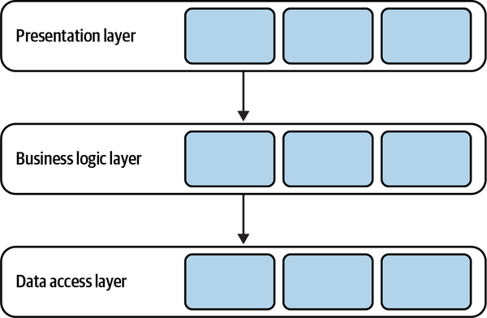
In its classic form, the layered architecture consists of three layers: the presentation layer (PL), the business logic layer (BLL), and the data access layer (DAL).
The presentation layer, shown in Figure 8-2, implements the program’s user interface for interactions with its consumers. In the pattern’s original form, this layer denotes a graphical interface, such as a web interface or a desktop application.
In modern systems, however, the presentation layer has a broader scope: that is, all means for triggering the program’s behavior, both synchronous and asynchronous. For example:
Graphical user interface (GUI)
Command-line interface (CLI)
API for programmatic integration with other systems
Subscription to events in a message broker
Message topics for publishing outgoing events
All of these are the means for the system to receive requests from the external environment and communicate the output. Strictly speaking, the presentation layer is the program’s public interface.
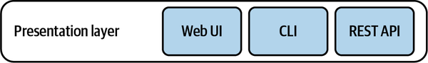
As the name suggests, this layer is responsible for implementing and encapsulating the program’s business logic. This is the place where business decisions are implemented. As Eric Evans says,1 this layer is the heart of software.
This layer is where the business logic patterns described in Chapters 5–7 are implemented—for example, active records or a domain model (see Figure 8-3).
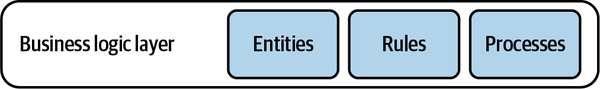
The data access layer provides access to persistence mechanisms. In the pattern’s original form, this referred to the system’s database. However, as in the case of the presentation layer, the layer’s responsibility is broader for modern systems.
First, ever since the NoSQL revolution broke out, it is common for a system to work with multiple databases. For example, a document store can act as the operational database, a search index for dynamic queries, and an in-memory database for performance-optimized operations.
Second, traditional databases are not the only medium for storing information. For example, cloud-based object storage2 can be used to store the system’s files, or a message bus can be used to orchestrate communication between the program’s different functions.3
Finally, this layer also includes integration with the various external information providers needed to implement the program’s functionality: APIs provided by external systems, or cloud vendors’ managed services, such as language translation, stock market data, and audio transcription (see Figure 8-4).
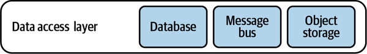
The layers are integrated in a top-down communication model: each layer can hold a dependency only on the layer directly beneath it, as shown in Figure 8-5. This enforces decoupling of implementation concerns and reduces the knowledge shared between the layers. In Figure 8-5, the presentation layer references only the business logic layer. It has no knowledge of the design decisions made in the data access layer.
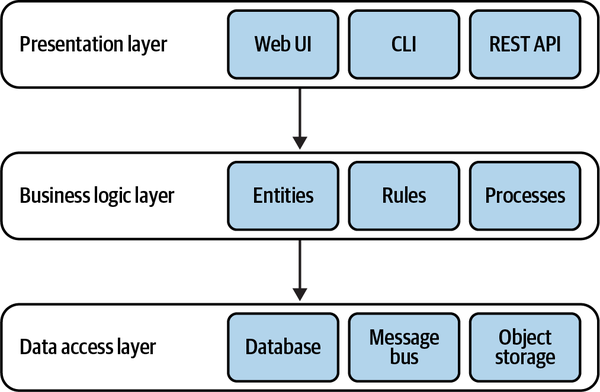
It’s common to see the layered architecture pattern extended with an additional layer: the service layer.
Defines an application’s boundary with a layer of services that establishes a set of available operations and coordinates the application’s response in each operation.
—Patterns of Enterprise Application Architecture4
The service layer acts as an intermediary between the program’s presentation and business logic layers. Consider the following code:
namespaceMvcApplication.Controllers{publicclassUserController:Controller{...[AcceptVerbs(HttpVerbs.Post)]publicActionResultCreate(ContactDetailscontactDetails){OperationResultresult=null;try{_db.StartTransaction();varuser=newUser();user.SetContactDetails(contactDetails);user.Save();_db.Commit();result=OperationResult.Success;}catch(Exceptionex){_db.Rollback();result=OperationResult.Exception(ex);}returnView(result);}}}
The MVC controller in this example belongs to the presentation layer. It exposes an endpoint that creates a new user. The endpoint uses the User active record object to create a new instance and save it. Moreover, it orchestrates a database transaction to ensure that a proper response is generated in case of an error.
To further decouple the presentation layer from the underlying business logic, such orchestration logic can be moved into a service layer, as shown in Figure 8-6.
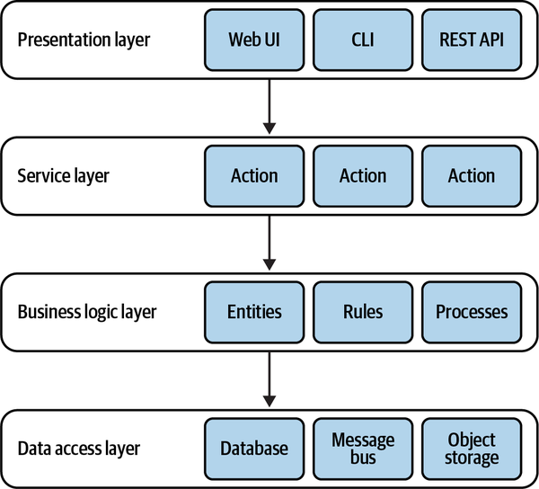
It’s important to note that in the context of the architectural pattern, the service layer is a logical boundary. It is not a physical service.
The service layer acts as a façade for the business logic layer: it exposes an interface that corresponds with the public interface’s methods, encapsulating the required orchestration of the underlying layers. For example:
interfaceCampaignManagementService{OperationResultCreateCampaign(CampaignDetailsdetails);OperationResultPublish(CampaignIdid,PublishingScheduleschedule);OperationResultDeactivate(CampaignIdid);OperationResultAddDisplayLocation(CampaignIdid,DisplayLocationnewLocation);...}
All of the preceding methods correspond to the system’s public interface. However, they lack presentation-related implementation details. The presentation layer’s responsibility becomes limited to providing the required input to the service layer and communicating its responses back to the caller.
Let’s refactor the preceding example and extract the orchestration logic into a service layer:
namespaceServiceLayer{publicclassUserService{...publicOperationResultCreate(ContactDetailscontactDetails){OperationResultresult=null;try{_db.StartTransaction();varuser=newUser();user.SetContactDetails(contactDetails);user.Save();_db.Commit();result=OperationResult.Success;}catch(Exceptionex){_db.Rollback();result=OperationResult.Exception(ex);}returnresult;}...}}namespaceMvcApplication.Controllers{publicclassUserController:Controller{...[AcceptVerbs(HttpVerbs.Post)]publicActionResultCreate(ContactDetailscontactDetails){varresult=_userService.Create(contactDetails);returnView(result);}}}
Having an explicit service level has a number of advantages:
We can reuse the same service layer to serve multiple public interfaces; for example, a graphical user interface and an API. No duplication of the orchestration logic is required.
It improves modularity by gathering all related methods in one place.
It further decouples the presentation and business logic layers.
It makes it easier to test the business functionality.
That said, a service layer is not always necessary. For example, when the business logic is implemented as a transaction script, it essentially is a service layer, as it already exposes a set of methods that form the system’s public interface. In such a case, the service layer’s API would just repeat the transaction scripts’ public interfaces, without abstracting or encapsulating any complexity. Hence, either a service layer or a business logic layer will suffice.
On the other hand, the service layer is required if the business logic pattern requires external orchestration, as in the case of the active record pattern. In this case, the service layer implements the transaction script pattern, while the active records it operates on are located in the business logic layer.
Elsewhere, you may encounter other terms used for the layered architecture:
Presentation layer = user interface layer
Service layer = application layer
Business logic layer = domain layer = model layer
Data access layer = infrastructure layer
To eliminate confusion, I present the pattern using the original terminology. That said, I prefer “user interface layer” and “infrastructure layer” as these terms better reflect the responsibilities of modern systems and an application layer to avoid confusion with the physical boundaries of services.
The dependency between the business logic and the data access layers makes this architectural pattern a good fit for a system with its business logic implemented using the transaction script or active record pattern.
However, the pattern makes it challenging to implement a domain model. In a domain model, the business entities (aggregates and value objects) should have no dependency and no knowledge of the underlying infrastructure. The layered architecture’s top-down dependency requires jumping through some hoops to fulfill this requirement. It is still possible to implement a domain model in a layered architecture, but the pattern we will discuss next fits much better.
The ports & adapters architecture addresses the shortcomings of the layered architecture and is a better fit for implementation of more complex business logic. Interestingly, both patterns are quite similar. Let’s “refactor” the layered architecture into ports & adapters.
Essentially, both the presentation layer and data access layer represent integration with external components: databases, external services, and user interface frameworks. These technical implementation details do not reflect the system’s business logic; so, let’s unify all such infrastructural concerns into a single “infrastructure layer,” as shown in Figure 8-8.
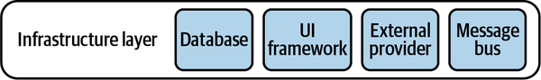
The dependency inversion principle (DIP) states that high-level modules, which implement the business logic, should not depend on low-level modules. However, that’s precisely what happens in the traditional layered architecture. The business logic layer depends on the infrastructure layer. To conform with the DIP, let’s reverse the relationship, as shown in Figure 8-9.
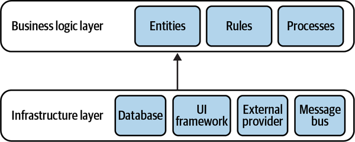
Instead of being sandwiched between the technological concerns, now the business logic layer takes the central role. It doesn’t depend on any of the system’s infrastructural components.
Finally, let’s add an application5 layer as a façade for the system’s public interface. As the service layer in the layered architecture, it describes all the operations exposed by the system and orchestrates the system’s business logic for executing them. The resultant architecture is depicted in Figure 8-10.
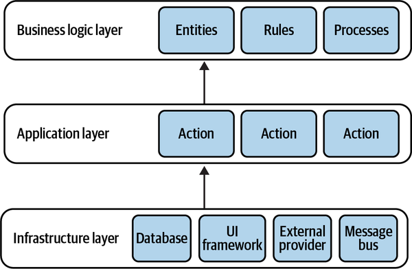
The architecture depicted in Figure 8-10 is the ports & adapters architectural pattern. The business logic doesn’t depend on any of the underlying layers, as required for implementing the domain model and event-sourced domain model patterns.
Why is this pattern called ports & adapters? To answer this question, let’s see how the infrastructural components are integrated with the business logic.
The core goal of the ports & adapters architecture is to decouple the system’s business logic from its infrastructural components.
Instead of referencing and calling the infrastructural components directly, the business logic layer defines “ports” that have to be implemented by the infrastructure layer. The infrastructure layer implements “adapters”: concrete implementations of the ports’ interfaces for working with different technologies (see Figure 8-11).
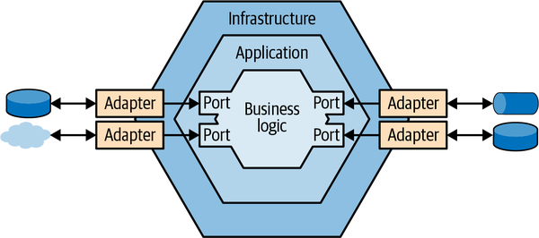
The abstract ports are resolved into concrete adapters in the infrastructure layer, either through dependency injection or by bootstrapping.
For example, here is a possible port definition and a concrete adapter for a message bus:
namespaceApp.BusinessLogicLayer{publicinterfaceIMessaging{voidPublish(Messagepayload);voidSubscribe(Messagetype,Actioncallback);}}namespaceApp.Infrastructure.Adapters{publicclassSQSBus:IMessaging{...}}
The ports & adapters architecture is also known as hexagonal architecture, onion architecture, and clean architecture. All of these patterns are based on the same design principles, have the same components, and have the same relationships between them, but as in the case of the layered architecture, the terminology may differ:
Application layer = service layer = use case layer
Business logic layer = domain layer = core layer
Despite that, these patterns can be mistakenly treated as conceptually different. That’s just another example of the importance of a ubiquitous language.
The command-query responsibility segregation (CQRS) pattern is based on the same organizational principles for business logic and infrastructural concerns as ports & adapters. It differs, however, in the way the system’s data is managed. This pattern enables representation of the system’s data in multiple persistent models.
Let’s see why we might need such a solution and how to implement it.
In many cases, it may be difficult, if not impossible, to use a single model of the system’s business domain to address all of the system’s needs. For example, as discussed in Chapter 7, online transaction processing (OLTP) and online analytical processing (OLAP) may require different representations of the system’s data.
Another reason for working with multiple models may have to do with the notion of polyglot persistence. There is no perfect database. Or, as Greg Young6 says, all databases are flawed, each in its own way: we often have to balance the needs for scale, consistency, or supported querying models. An alternative to finding a perfect database is the polyglot persistence model: using multiple databases to implement different data-related requirements. For example, a single system might use a document store as its operational database, a column store for analytics/reporting, and a search engine for implementing robust search capabilities.
Finally, the CQRS pattern is closely related to event sourcing. Originally, CQRS was defined to address the limited querying possibilities of an event-sourced model: it is only possible to query events of one aggregate instance at a time. The CQRS pattern provides the possibility of materializing projected models into physical databases that can be used for flexible querying options.
That said, this chapter “decouples” CQRS from event sourcing. I intend to show that CQRS is useful even if the business logic is implemented using any of the other business logic implementation patterns.
Let’s see how CQRS allows the use of multiple storage mechanisms for representing different models of the system’s data.
As the name suggests, the pattern segregates the responsibilities of the system’s models. There are two types of models: the command execution model and the read models.
CQRS devotes a single model to executing operations that modify the system’s state (system commands). This model is used to implement the business logic, validate rules, and enforce invariants.
The command execution model is also the only model representing strongly consistent data—the system’s source of truth. It should be possible to read the strongly consistent state of a business entity and have optimistic concurrency support when updating it.
The system can define as many models as needed to present data to users or supply information to other systems.
A read model is a precached projection. It can reside in a durable database, flat file, or in-memory cache. Proper implementation of CQRS allows for wiping out all data of a projection and regenerating it from scratch. This also enables extending the system with additional projections in the future—models that couldn’t have been foreseen originally.
Finally, read models are read-only. None of the system’s operations can directly modify the read models’ data.
For the read models to work, the system has to project changes from the command execution model to all its read models. This concept is illustrated in Figure 8-12.
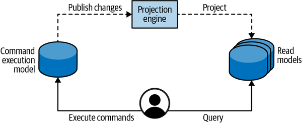
The projection of read models is similar to the notion of a materialized view in relational databases: whenever source tables are updated, the changes have to be reflected in the precached views.
Next, let’s see two ways to generate projections: synchronously and asynchronously.
Synchronous projections fetch changes to the OLTP data through the catch-up subscription model:
The projection engine queries the OLTP database for added or updated records after the last processed checkpoint.
The projection engine uses the updated data to regenerate/update the system’s read models.
The projection engine stores the checkpoint of the last processed record. This value will be used during the next iteration for getting records added or modified after the last processed record.
This process is illustrated in Figure 8-13 and shown as a sequence diagram in Figure 8-14.
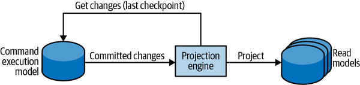
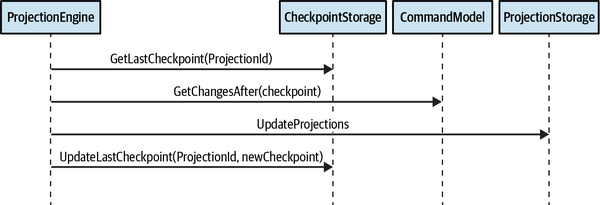
For the catch-up subscription to work, the command execution model has to checkpoint all the appended or updated database records. The storage mechanism should also support the querying of records based on the checkpoint.
The checkpoint can be implemented using the databases’ features. For example, SQL Server’s “rowversion” column can be used to generate unique, incrementing numbers upon inserting or updating a row, as illustrated in Figure 8-15. In databases that lack such functionality, a custom solution can be implemented that increments a running counter and appends it to each modified record. It’s important to ensure that the checkpoint-based query returns consistent results. If the last returned record has a checkpoint value of 10, on the next execution no new requests should have values lower than 10. Otherwise, these records will be skipped by the projection engine, which will result in inconsistent models.
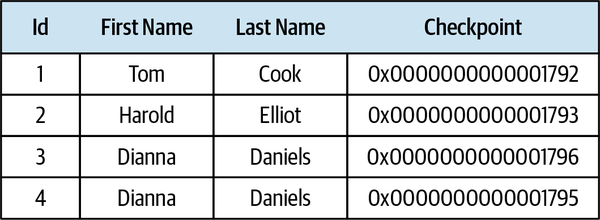
The synchronous projection method makes it trivial to add new projections and regenerate existing ones from scratch. In the latter case, all you have to do is reset the checkpoint to 0; the projection engine will scan the records and rebuild the projections from the ground up.
In the asynchronous projection scenario, the command execution model publishes all committed changes to a message bus. The system’s projection engines can subscribe to the published messages and use them to update the read models, as shown in Figure 8-16.
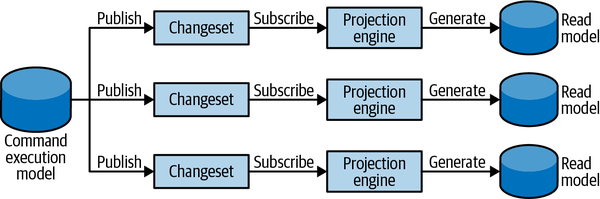
Despite the apparent scaling and performance advantages of the asynchronous projection method, it is more prone to the challenges of distributed computing. If the messages are processed out of order or duplicated, inconsistent data will be projected into the read models.
This method also makes it more challenging to add new projections or regenerate existing ones.
For these reasons, it’s advisable to always implement synchronous projection and, optionally, an additional asynchronous projection on top of it.
In the CQRS architecture, the responsibilities of the system’s models are segregated according to their type. A command can only operate on the strongly consistent command execution model. A query cannot directly modify any of the system’s persisted state—neither the read models nor the command execution model.
A common misconception about CQRS-based systems is that a command can only modify data, and data can be fetched for display only through a read model. In other words, the command executing the methods should never return any data. This is wrong. This approach produces accidental complexities and leads to a bad user experience.
A command should always let the caller know whether it has succeeded or failed. If it has failed, why did it fail? Was there a validation or technical issue? The caller has to know how to fix the command. Therefore, a command can—and in many cases should—return data; for example, if the system’s user interface has to reflect the modifications resulting from the command. Not only does this make it easier for consumers to work with the system since they immediately receive feedback for their actions, but the returned values can be used further in the consumers’ workflows, eliminating the need for unnecessary data round trips.
The only limitation here is that the returned data should originate from the strongly consistent model—the command execution model—as we cannot expect the projections, which will eventually be consistent, to be refreshed immediately.
The CQRS pattern can be useful for applications that need to work with the same data in multiple models, potentially stored in different kinds of databases. From an operational perspective, the pattern supports domain-driven design’s core value of working with the most effective models for the task at hand, and continuously improving the model of the business domain. From an infrastructural perspective, CQRS allows for leveraging the strength of the different kinds of databases; for example, using a relational database to store the command execution model, a search index for full text search, and prerendered flat files for fast data retrieval, with all the storage mechanisms reliably synchronized.
Moreover, CQRS naturally lends itself to event-sourced domain models. The event-sourcing model makes it impossible to query records based on the aggregates’ states, but CQRS enables this by projecting the states into queryable databases.
The patterns we’ve discussed—layered architecture, ports & adapters architecture, and CQRS—should not be treated as systemwide organizational principles. These are not necessarily high-level architecture patterns for a whole bounded context either.
Consider a bounded context encompassing multiple subdomains, as shown in Figure 8-17. The subdomains can be of different types: core, supporting, or generic. Even subdomains of the same type may require different business logic and architectural patterns (that’s the topic of Chapter 10). Enforcing a single, bounded, contextwide architecture will inadvertently lead to accidental complexity.
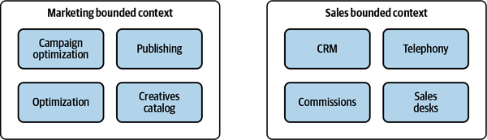
Our goal is to drive design decisions according to the actual needs and business strategy. In addition to the layers that partition the system horizontally, we can introduce additional vertical partitioning. It’s crucial to define logical boundaries for modules encapsulating distinct business subdomains and use the appropriate tools for each, as demonstrated in Figure 8-18.
Appropriate vertical boundaries make a monolithic bounded context a modular one and help to prevent it from becoming a big ball of mud. As we will discuss in Chapter 11, these logical boundaries can be refactored later into physical boundaries of finer-grained bounded contexts.
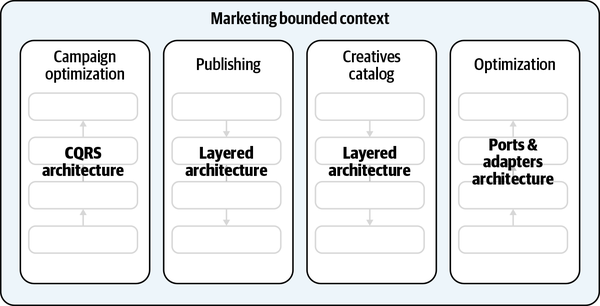
The layered architecture decomposes the codebase based on its technological concerns. Since this pattern couples business logic with data access implementation, it’s a good fit for active record–based systems.
The ports & adapters architecture inverts the relationships: it puts the business logic at the center and decouples it from all infrastructural dependencies. This pattern is a good fit for business logic implemented with the domain model pattern.
The CQRS pattern represents the same data in multiple models. Although this pattern is obligatory for systems based on the event-sourced domain model, it can also be used in any systems that need a way of working with multiple persistent models.
The patterns we will discuss in the next chapter address architectural concerns from a different perspective: how to implement reliable interaction between different components of a system.
Which architectural pattern can be used with business logic implemented as the active record pattern? Select all that apply.
Layered architecture
Ports and adapters
CQRS
Which architectural pattern decouples the business logic from infrastructural concerns? Select all that apply.
Layered architecture
Ports and adapters
CQRS
Assume you are implementing the ports and adapters pattern and need to integrate a cloud provider’s managed message bus. In which layer should the integration be implemented?
Business logic layer
Application layer
Infrastructure layer
Which of the following statements is true regarding the CQRS pattern? Select all that apply.
Asynchronous projections are easier to scale.
Either synchronous or asynchronous projection can be used, but not both at the same time.
A command cannot return any information to the caller. The caller should always use the read models to get the results of the executed actions.
A command can return information as long as it originates from a strongly consistent model.
The CQRS pattern allows for representing the same business objects in multiple persistent models. As a result, it allows for working with multiple models in the same bounded context. Does it contradict the bounded context’s notion of being a model boundary?
Yes
No
1 Evans, E. (2003). Domain-Driven Design: Tackling Complexity in the Heart of Software. Boston: Addison-Wesley.
2 Such as AWS S3 or Google Cloud Storage.
3 In this context, the message bus is used for the system’s internal needs. If it were exposed publicly, it would belong to the presentation layer.
4 Fowler, M. (2002). Patterns of Enterprise Application Architecture. Boston: Addison-Wesley.
5 Since we are not in the context of the layered architecture, I will take the freedom to use the term application layer instead of service layer, as it better reflects the purpose.
6 Polyglot data by Greg Young. (n.d.). Retrieved June 14, 2021, from YouTube.